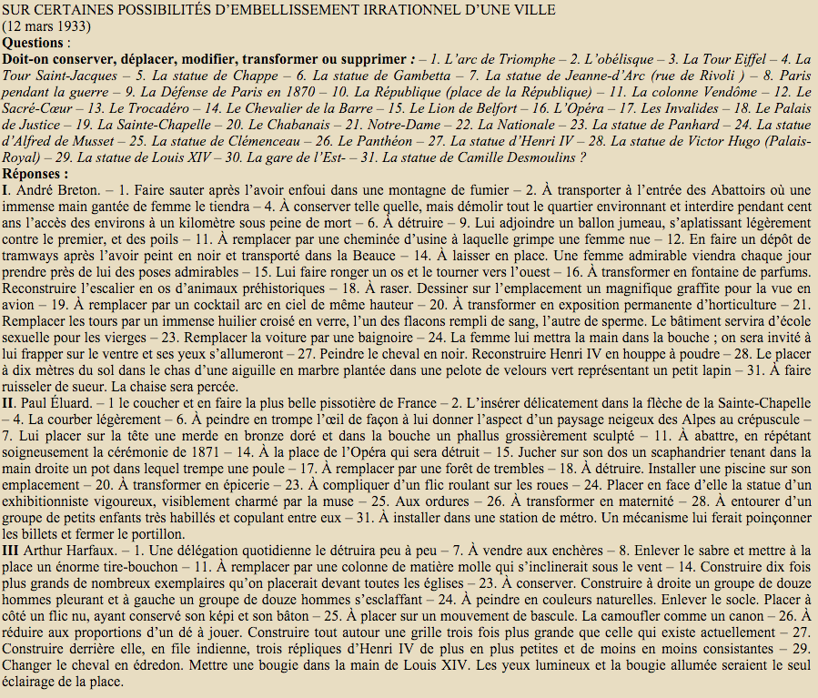
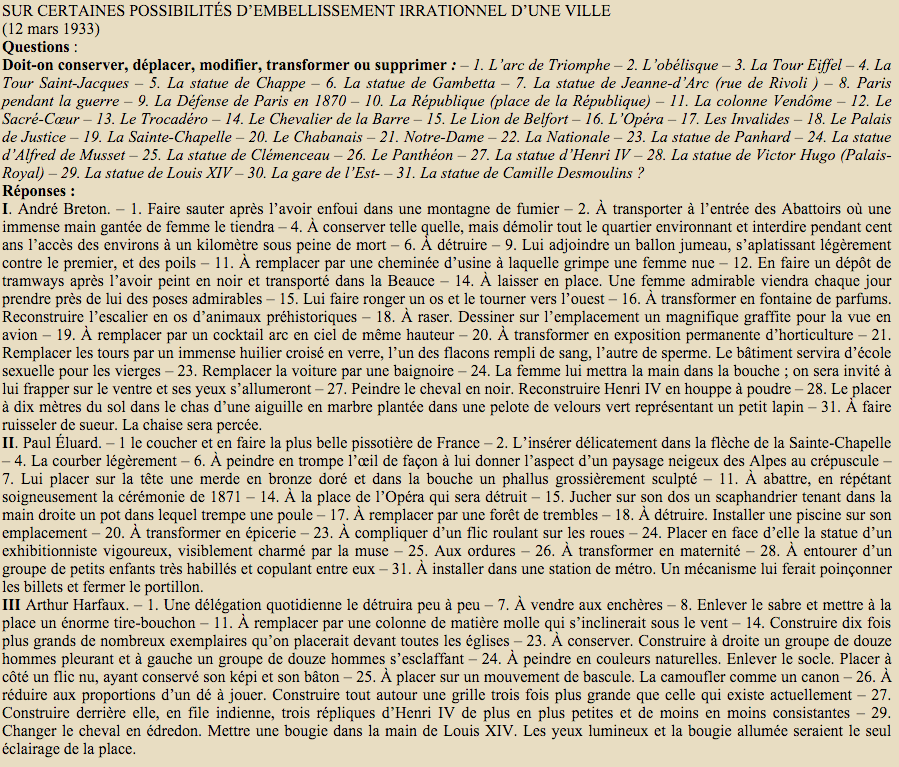

Z-axis Research
Research Teams: INKE, MVP, Mlab
Team members: Alex Christie, Adèle Barclay, Daniel Brendle-Moczuk, Colin Jones, Belaid Moa, Stephen Ross, Jentery Sayers, Katie Tanigawa
The distinctions of class and power are engineered, reified and legitimated in the map by means of cartographic signs…Using all the tricks of the cartographic trade—size of symbol, thickness of line, height of lettering, hatching and shading, the addition of color—we can trace this reinforcing tendency in innumerable European maps. We can begin to see how maps, like art, become a mechanism ‘For defining social relationships, sustaining social rules, and strengthening social values.’ (7)
J. B. Harley
A map of the British empire in America with the French, Spanish and the Dutch settlements adjacent thereto
GIS mapping
(place based)
Z-Axis mapping
(space based)
 

workflow
Text markup of novel | Image markup of map
workflow
subdivided plane
workflow
displacement map
workflow
3D map mesh
workflow
warped map
Nightwood by Djuna Barnes
Z-axis Prototypes
- Thinking across contemporary and historical geospatial modes. Reading across literary and geographic representations of space.
- Remixing historical artifacts as a form of literary and cultural inquiry (digitization ≠ uncritical reproduction).
- Expanding the grammar of geospatial methods in the humanities (alongside GIS and historical GIS).
Z-axis Mapping Tool
zaxis.uvic.ca
Sentiment Mapping with the z-axis tool
Up next...
3D Mapping Tutorial
For now...
Any short questions?